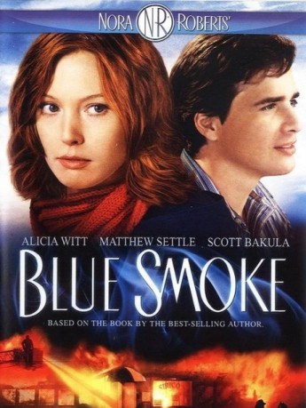

#6739 Nora Roberts - Tödliche Flammen
Alternativ: Blue Smoke
 
 IMDB-Wertung: 5.8 / 10
IMDB-Wertung: 5.8 / 10  Metascore: 0
Metascore: 0 
Watching her family's pizzeria Sirico's burning up when a young girl, Reena Hale decided to follow in the footsteps of Baltimore PD- Fire department liaison, investigator John Minger, and succeeds, except in her parents' case. twice she finds a dream lover, each killed in a fire just before he would propose to her. Hugh's case is clearly arson, and later Josh's is found also to link, the killer even left clues to link to Siricos. Her third lover and neighbor, Bo Goodnight, soon proves the next target, but not the last.
Jahr: 2007
Dauer: 88 Minuten
FSK:
Land: USA Studio: Lifetime TelevisionTonspuren:
Untertitel:
Auflösung: 720p (1280x720) Größe: 2344 MB
Genre: Thriller, Drama, Liebe
Regisseur: David Carson
Drehbuch: Ronni Kern
Soundtrack:
Darsteller:
 Alicia Witt als Reena Hale
Alicia Witt als Reena Hale Scott Bakula als John Minger
Scott Bakula als John Minger Matthew Settle als Bo Goodnight
Matthew Settle als Bo Goodnight Talia Shire als Bianca Hale
Talia Shire als Bianca Hale Eric Keenleyside als Gib Hale
Eric Keenleyside als Gib Hale- John Reardon als Josh
- Benjamin Ayres als Hugh
 David Brown als Joe Pastorelli Sr.
David Brown als Joe Pastorelli Sr.- Chad Nobert als Xander Hale
- Peter Skagen als FBI Agent
- Rylan Wilkie als Brad
- Chris Fassbender als Joey Pastorelli Jr.
- Taylor Dauphinais als Young Reena
- Liam Nelson als Young Joey Pastorelli Jr.
- Rod Heatherington als Steve
- Daniela Vlaskalic als Fran Hale
- Karen Johnson-Diamond als Mrs. Pastorelli
- Patrick J. MacEachern als Jack
Datei: X:\Person\Nora Roberts\Nora Roberts - Tödliche Flammen (2007, FSK, 1280x720).mkv seit 11.08.2017
Festplatte: HD Collection-7+mehr(A-Z)+Person
 Es gibt insgesamt 11 Filme in der Gruppe 'Person\Nora Roberts'
Es gibt insgesamt 11 Filme in der Gruppe 'Person\Nora Roberts'